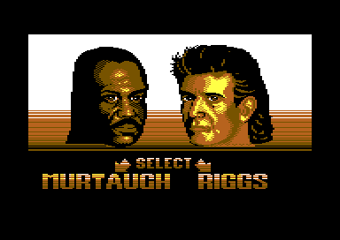

<meta charset="utf-8">
<meta name="viewport" content="width=device-width, initial-scale=1">
<title>{{title}}</title>
<link rel="preconnect" href="https://fonts.googleapis.com">
<link rel="stylesheet" href="https://fonts.googleapis.com/css2?family=Lato:wght@400;700;900&family=IBM+Plex+Mono:wght@400;500&display=swap">
<style>
:root{
  --bg:#23262d; --paper:#e9e7e1; --surface:#ffffff; --surface-2:#f1efea; --line:#d5d3cc; --line-soft:#e0ded8;
  --ink:#2f3136; --ink-soft:#55585f; --ink-mute:#80838a;
  --link:#1f5fa8; --link-hover:#154480; --accent:#1f5fa8;
  --amber:#c25a00; --cyan:#1f5fa8; --coral:#d04a3a; --green:#2a8a4a; --violet:#4a5bd6; --hl:#fff0c2;
  --chip:#2f3136; --chip-ink:#ffffff;
  --c64blue:#40318d; --c64grey:#686868;
  --fd:'Lato',system-ui,sans-serif; --fb:'Lato',system-ui,sans-serif; --fm:'IBM Plex Mono',ui-monospace,Menlo,monospace;
  --col:1080px; --gx:68px; --fs:17px; --lh:1.6; --hw:900; --h1:46px; --h2:26px; --sy:48px; --pp:26px; --r:10px;
  --plate-shadow:0 1px 2px rgba(0,0,0,.05),0 4px 14px rgba(0,0,0,.05);
}
*{box-sizing:border-box}
html{background:var(--bg);min-height:100%}
body{background:var(--paper);color:var(--ink);font-family:var(--fb);font-size:var(--fs);line-height:var(--lh);max-width:var(--col);margin:0 auto;min-height:100vh;padding:0 0 4rem}
h1,h2,h3{font-weight:var(--hw);letter-spacing:-.01em;text-wrap:balance;color:var(--ink);margin:0}
.wrap{padding:0 var(--gx)}
.hero{padding:48px var(--gx) 8px;text-align:left}
.eyebrow{font-family:var(--fm);font-size:12px;letter-spacing:.08em;text-transform:uppercase;color:var(--ink-mute);margin:0 0 10px}
.hero h1{font-size:var(--h1);line-height:1.15;letter-spacing:-.02em;margin:0 0 14px}
.hero .sub{margin:0 0 .6em;color:var(--ink-soft)}
section{padding:var(--sy) 0 24px}
section:last-of-type{border-bottom:none}
.fig{font-family:var(--fm);font-size:12px;letter-spacing:.08em;text-transform:uppercase;color:var(--ink-mute);margin:0 0 10px}
h2.t{font-size:var(--h2);margin-bottom:12px}
.lede{color:var(--ink-soft);margin:0 0 30px}
.plate{background:var(--surface);border:1px solid var(--line);border-radius:var(--r);padding:var(--pp);box-shadow:var(--plate-shadow)}
.cap{font-size:14px;color:var(--ink-mute);margin-top:14px;line-height:1.55}
.cap b{color:var(--ink);font-weight:700}
code{font-family:var(--fm);font-size:.82em;background:var(--chip);color:var(--chip-ink);border-radius:4px;padding:2px 6px;overflow-wrap:break-word;-webkit-box-decoration-break:clone;box-decoration-break:clone}

table.t{border-collapse:collapse;margin:0 0 20px;font-size:15px}table.t td,table.t th{border-bottom:1px solid var(--line);padding:6px 12px 6px 0;text-align:left;vertical-align:top}
</style>
<!-- tabs -->
<header class="hero">
  <p class="eyebrow">1992 · Ocean Software</p>
  <h1>Controls</h1>
  <p class="sub">A joystick in either port, a pause key, and a select screen that wants fire and a direction together.</p>
</header>
<main class="wrap">
<section id="joystick">
  <p class="fig">01 · Joystick</p>
  <h2 class="t">Either port plays</h2>
  <p class="lede">The game reads both joystick ports together (<code>$F314</code>), so a joystick in either port works.</p>
  <table class="t"><tr><th>Input</th><th>What it does</th></tr>
  <tr><td>Left, right</td><td>walk; at a ladder, up and down climb it</td></tr>
  <tr><td>Up</td><td>jump (<code>$20EF</code>); at a door, go through it (<code>$21A1</code>)</td></tr>
  <tr><td>Fire</td><td>shoot one round a press (<code>$1DB3</code>); the press that finds the gun empty fires and reloads from a magazine (<code>$1E39</code>)</td></tr>
  <tr><td>P</td><td>pause (<code>$E12F</code>)</td></tr>
  <tr><td>RESTORE</td><td>nothing: it goes straight to an <code>RTI</code> (<code>$EC65</code>)</td></tr></table>
</section>
<section id="select">
  <p class="fig">02 · The select screen</p>
  <h2 class="t">Fire with a direction picks the man</h2>
  <div class="plate"><p class="cap"><b>The select screen.</b> Hold fire and push right for Riggs or left for Murtaugh (<code>$C34C</code>). Fire alone does nothing here.</p></div>
  <p>Which man you pick changes two things: the sprite file the stage loader reads (SP00 for Riggs, SP0Z for Murtaugh) and the jump table (<a href="gameplay.html#jump">Two jumps</a>). Both fire the same way.</p>
</section>
</main>
<footer style="margin:16px 0 0;padding:22px var(--gx) 0;border-top:1px solid #e0ded8;font-family:'IBM Plex Mono',ui-monospace,Menlo,monospace;font-size:12px;color:#80838a"><a href="https://github.com/gamesexplained/gamesexplained" style="color:#1f5fa8;text-decoration:none">GitHub</a> · <a href="https://discord.gg/3V9GWyRDWV" style="color:#1f5fa8;text-decoration:none">Discord</a><br>© Games Explained contributors. Write-ups, facts and symbol maps are available under <a href="https://creativecommons.org/licenses/by-sa/4.0/" style="color:#1f5fa8;text-decoration:none">CC BY-SA 4.0</a>; code under <a href="https://opensource.org/licenses/MIT" style="color:#1f5fa8;text-decoration:none">MIT</a></footer>
